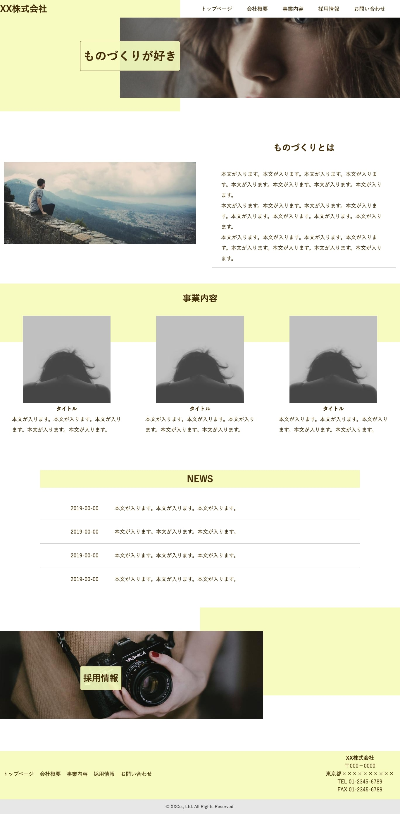
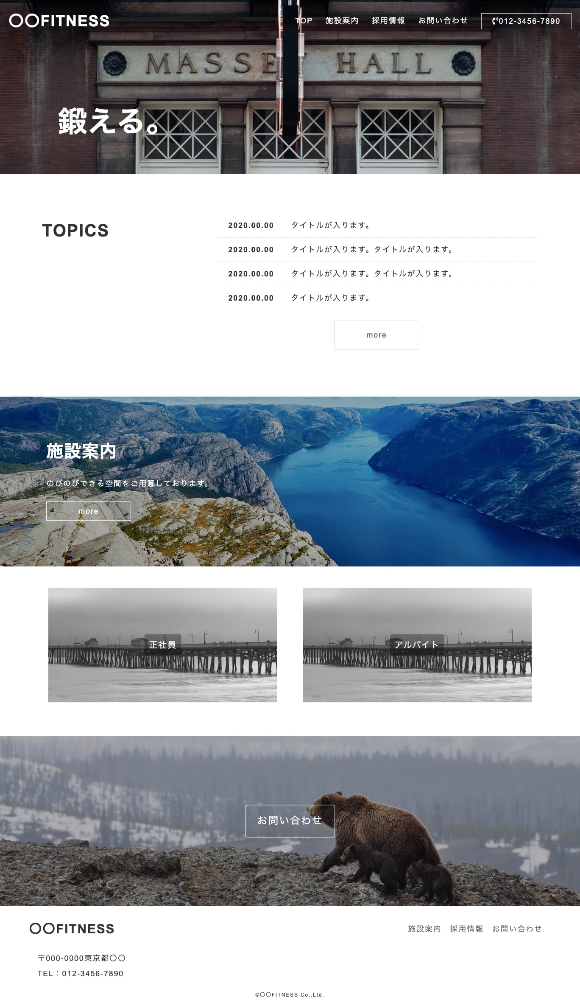
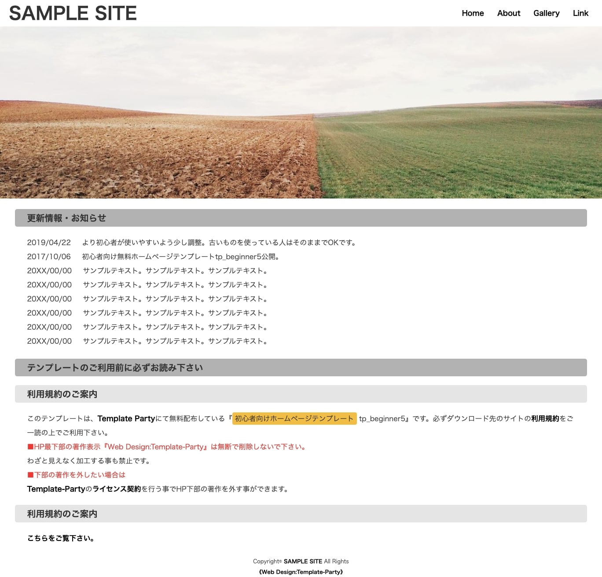
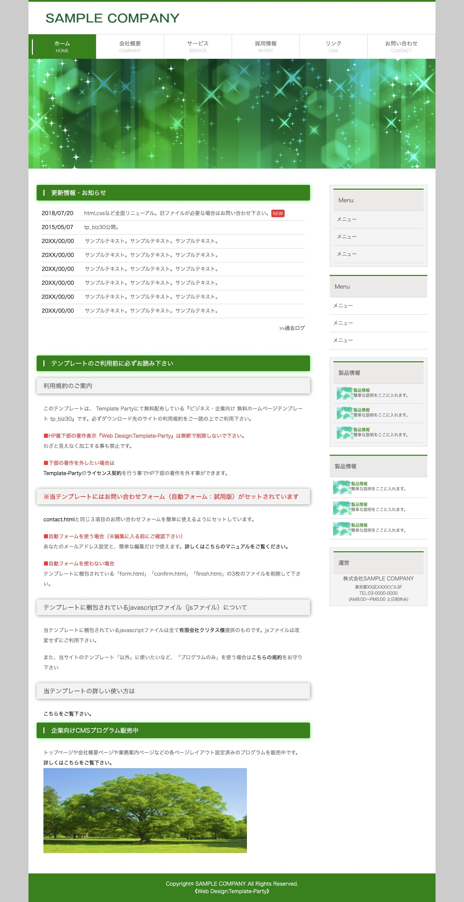
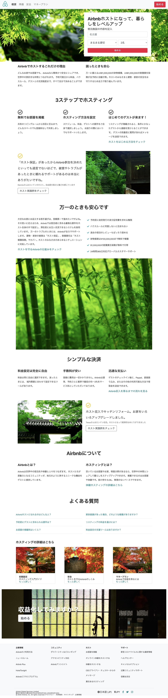

自己紹介
- 1976年2月12日生・44歳
- 現在
- 高校生・中学生・小学生、三人の子どもの子育て中。
- 「プログラミングで収入を得たい」「技術を身に付けたい」と決心し、学習中。趣味のマラソンでサブ3.5（フルマラソン3時間30分切り）を目指しトレーニングしています。
- 過去
- ●20代●保育士→コールセンターのオペレーターを経て結婚。子ども2人を授かるも、隆起性皮膚線維肉腫をいう皮膚がんになり「命」と向き合ったことで、人生を大切にすることを誓う。
- ●30代●3人目の子どもを授かり、3児人の母になる。ここから10年は怒涛の育児生活。
- 飲食店やコンタクトセンター、庶務事務や一般事務などパート勤務
- ●40代●30代の後半に目覚めたマラソンで、一歩一歩の積み重ねが、必ず目標に近づける事を知ったことで、新たな目標「プログラミング技術を身につける」を掲げ、奮闘しております。
- 未来
- ガンジーの言葉より、、、「明日、死ぬかのように生きよ。そして、永遠に生きるかように学べ。」私は、自分の成長を自分で感じ、認める事で幸福度が上がると考えています。
だから、明日死ぬとしても「やりたい」と思うことに努力し学びを得る人生にしたいです。
プログラミングは、目まぐるしく変化する情報社会の中で、常に「学び（グレードアップ）」を与えてくれる所が魅力的です。
私の「学び」が誰かのお役に立てるよう、精進し努力します。依頼者様からのご縁から、学びの場を頂けるという感謝の気持ちを込めて、お仕事を承ります。
佐藤紀子
お役に立てること
コーディング
ランディングページやWebサイトの頂いたデザインカンプを元に適切にコーディングを行います。 既存サイトの不具合等にも対応致します。
使用スキル
レスポンシブ
スマホ、タブレット、パソコンなどの端末でも閲覧しやすいようにデザインいたします
使用スキル
スキルについて
HTML5
全てのWEBページの土台。HTMLに様々な言語を組み合わせることで思い通りのWEBページを作ることができるので、その要となるコーディングを丁寧に行います。
CSS3
HTMLに装飾を付ける為の基礎的な言語。WEBページの簡単な装飾はCSSで可能。簡易的なデザインであれば装飾を行います。
bootstrap
HTML,CSSやJavaScript で構成されツール。多様なデザインのWEBページ作成が可能。特にグリッドシステムによるレスポンシブ化が容易です。
スキル習得履歴
HTMLのマークアップ方法、CSSがどのようにHTMLにあたっているか学びました。
HTMLとCSSを組み立てながら、レスポンシブに挑戦。思う通りに配置が出来ず、苦戦しましたが、レスポンシブの仕組みを学びました。
シンプルなデザインで、HTMLとCSSの理解を深めました。複数ページに挑戦。複数ページになることで、classの付け方の重要性を学びました。
HTMLとCSSの総まとめ。ハンバーガーメニューに挑戦。仕組みを理解するのに苦労しましたが、CSSだけで装備する過程に面白みを感じました。CSSだけでレスポンシブ化できたことで、自信になりました。
bootstrapのグリットシステムを使って、レスポンシブ化が容易にできることに感動しました。また多様なデザインのテンプレートがあり、それらを利用してデザイン性の高いWEBページが作成可能な事を学びました。
